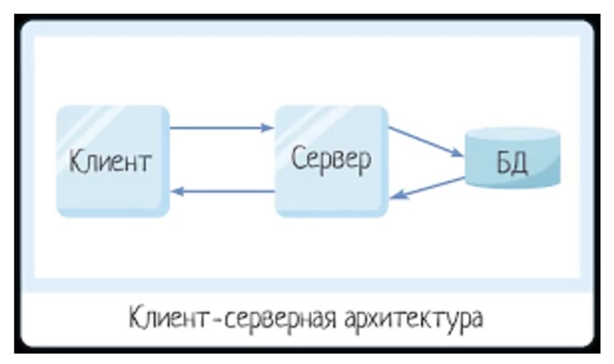

HTTP-протокол
HyperText transfer protocol. Протокол передачи данных между клиентом и сервером. Изначально был для передачи только html-файлов, а сейчас уже можно передавать всё что угодно (css, js, images, fonts, json и т.д.)
Виды сетевых протоколов
- HTTP(S) - http, files
- WS - web-socket
- TCP/IP - os protocol
- FTP - file
- SSH - cli
- SMTP, POP3 - email
Клиент-серверная архитектура
Построены все сайты и интернет-сервисы. Серверы и клиенты связаны вычислительными сетями через сетевые протоколы. 3-х уровневая КС-архитектура (Клиент --> Серевер --> БД)
Недостатки:
- если будет неисправно хотя бы одно звено, то вся система будет неработоспособной, чтобы этого избежать используют кластер серверов.
- злоумушленники могут изъять данные не только с сервера или БД, но и "по пути" движения запроса (поэтому высокие требования к защите данных, https, шифрованию и т.д.)
Клиент
- Запросы идут от клиентов ("Заказчик услуг")
- ПО для клиента (frontend), браузеры, приложения
- Полученнная информация дожна отобраться в понятном и доступном виде (json ---> сервер --> json --> html/css)
- Клиентов может быть огромное количество
Типы клиентов
- Тонкий клиент - низкая нагрузка на клиенте, вся логика на сервере. Клиент делает запрос и сервер все обрабатывает и выводит html (статичные сайты, минимум js).
- Толстый клиент - веб-приложения, которые выполняют какую-нибудь часть логики сами (SPA, насыщенный графический интерфейс, js много).
- Богатый клиент - что-то среднее.
Сервер
- Чаще всего на ОС Linux
- Сервер отвечает на запросы клиентов ("Поставщик услуг")
- Данные хранятся на сервере в БД
- Должна быть высокая производительность (нагрузка на сервер)
- Должна быть высокая производительность (нагрузка на сервер)
- ПО для сервера (backend)
- Отказоустойчивость
- Одновременно может обработать не более определенного числа запросов (чтобы не было перегрузки)
- DATA-центры
- Делает запросы к сереверу БД
- Должен быть защищенным от вредоносных запросов, которые могут вывести его из строя
Если в архитектуре имеется кластер серверов, то ставится дополнительный промежуточный сервер-балансировщик, который выбирает доступный сервер для клиента (используется для высоконагруженных приложений).
Типы серверов
- Web-сервер - серверы с доступом по http-протоколу и различными данными
- Серверы БД - серверы с доступом к БД
- Файловые серверы - файлохранилище
- Почтовые серверы - для рассылки на email
- Серверы приложений - доступ к сторонним API
- Прокси-сервер - промежуточный сервер. Нужно, чтобы сымитировать запрос. Как будто запрос исходит не с вашего локального IP, а с другого удаленного. Безопасность, неотслеживаемость.
БД
- Просто большие таблицы с полями поле-значение
- Повышенные требования к защите информации (персональные данные)
- Если на сервере произошли какие-то сбои, то вся необходимаяя информация должна будет остаться в БД, и эти данные позже можно будет восстановить
- Может быть сервер-балансировщик для БД
Запросы
- Метод запроса (GET, POST, PUT, DELETE)
- URL запроса, куда он будет отправлен
- Заголовки запроса (headers), где хранятся данные запроса, поле-значение
- Код ответа сервера
- Содержимое запроса (form data)
- Содержимое ответа (json - более популярный или xml - более читаемый, но лишние символы)
URL
TODO
Headers
- GENERAL
- Request URL: http://localhost:3000/knowledge-bank/img/logo.svg
- Request Method: GET
- Status Code: 200 OK
- Remote Address: 127.0.0.1:3000
- Referrer Policy: strict-origin-when-cross-origin
- REQUEST HEADERS
- Accept: image/avif,image/webp,image/apng,image/svg+xml,image/*,*/*;q=0.8
- Accept-Encoding: gzip, deflate, br
- Accept-Language: ru-RU,ru;q=0.9,en;q=0.8,en-US;q=0.7
- Cache-Control: no-cache
- Connection: keep-alive
- Cookie: _ym_uid=1652945145444754001; _ym_d=1655273573
- Host: localhost:3000
- Pragma: no-cache
- Referer: http://localhost:3000/knowledge-bank/docs/backend/http/
- sec-ch-ua: "Chromium";v="106", "Google Chrome";v="106", "Not;A=Brand";v="99"
- sec-ch-ua-mobile: ?0
- sec-ch-ua-platform: "macOS"
- Sec-Fetch-Dest: image
- Sec-Fetch-Mode: no-cors
- Sec-Fetch-Site: same-origin
- User-Agent: Mozilla/5.0 (Macintosh; Intel Mac OS X 10_15_7) AppleWebKit/537.36 (KHTML, like Gecko) Chrome/106.0.0.0 Safari/537.36
- RESPOONSE HEADERS
- Accept-Ranges: bytes
- access-control-allow-origin: *
- Cache-Control: public, max-age=0
- Connection: keep-alive
- Content-Encoding: gzip
- Content-Type: image/svg+xml
- Date: Sat, 29 Oct 2022 09:40:42 GMT
- ETag: W/"1926-18391797ae0"
- Keep-Alive: timeout=5
- Last-Modified: Sat, 01 Oct 2022 02:56:41 GMT
- Transfer-Encoding: chunked
- Vary: Accept-Encoding
- X-Powered-By: Express
Status codes
100 – 199 - Informational responses
- 100 Continue
- 101 Switching Protocols
- 103 Early Hints
200 – 299 - Successful responses
- 200 OK
- 201 Created
- 202 Accepted
- 203 Non-Authoritative Information
- 204 No Content
- 205 Reset Content
- 206 Partial Content
300 – 399 - Redirection messages
400 – 499 - Client error responses
- 400 Bad Request
- 401 Unauthorized
- 402 Payment Required
- 403 Forbidden
- 404 Not Found
- 405 Method Not Allowed
- 414 URI Too Long
500 – 599 - Server error responses
- 500 Internal Server Error
- 501 Not Implemented
- 502 Bad Gateway
- 503 Service Unavailable
Request Data / Reques body / Form data / Payload
Можно посмотреть во вкладке Payload/Preview.
Данные в формате json, которые отправляются вместе с запросом. Пример payload:
{"email":"EvgenyLeukhin@yandex.ru", "answer":"1234", "captchaCode":"45439daf-39e8-a71f-0434-d4c88b3cbb08"}